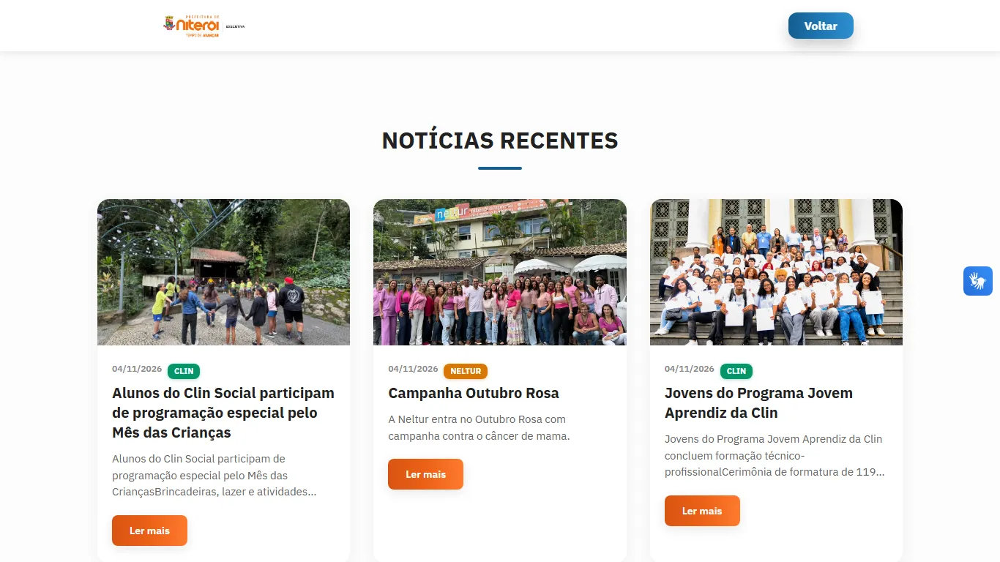

1Página inicial
Quem é a Secretaria, em uma frase, e o caminho para tudo o que ela faz.
Os textos vêm do painel: a equipe troca sem precisar de programador.
- conteúdo editável
- animações leves
- imagens WebP
O site da Secretaria Executiva de Niterói, no ar. A equipe edita textos e publica notícias sem mexer em código.
Prints do site no ar. Clique em qualquer um para ampliar.
Quem é a Secretaria, em uma frase, e o caminho para tudo o que ela faz.
Os textos vêm do painel: a equipe troca sem precisar de programador.
As últimas notícias na home e uma página com todas elas.
Cada notícia tem capa, órgão de origem e texto formatado.
Um menu lateral reúne os doze órgãos ligados à Secretaria.
Abre e fecha com um clique e não atrapalha a leitura.
Atalhos para os sistemas da Secretaria: SEI, Transformação Digital, Smart City e Escritório de Dados.
Perguntas frequentes em sanfona, direto ao ponto.
A equipe entra com a conta Microsoft da Prefeitura.
No painel, edita as seções do site, publica notícias e sobe imagens. Tudo fica registrado.
O mesmo site se ajusta à tela pequena.
Tem tradução para Libras (VLibras) e aviso de cookies com opção de recusar.
Do clique do visitante ao texto que a equipe publicou.

O site está no ar e aberto a todos. Dá uma volta por ele:
Abre em outra aba. O código-fonte é privado, de uso institucional.